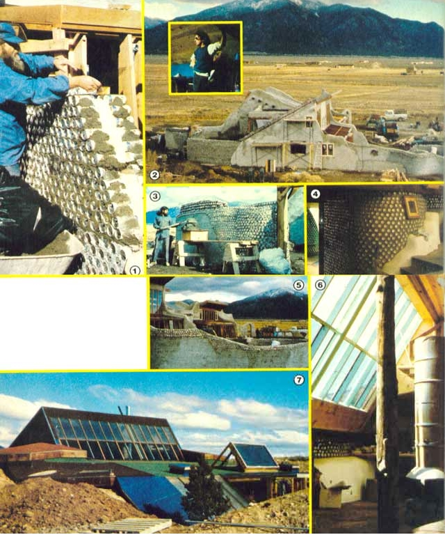

New Mexico architect Mike Reynolds specializes in the design of energy-efficient (and beautiful!) homes built from aluminum cans and rubber tires.
The young Kentucky-born designer/builder began his architectural career in 1970. Mike, however, felt "unfulfilled" by his lack of contact with the traditional buildings he was asked to design. Moreover, he grew disenchanted with the all too common web of energy dependence, unfair financing, and inefficient materials which went hand in hand with home construction and had caused housing costs to skyrocket.
"The architect alone will charge as much as 10% of the market price of a home . . . which is why most Americans settle for mass-produced, crackerbox-style houses," Mike says. "Then, it costs $10,000 to buy a lot in the Taos area, and another $1,000 to get power to the house. So, a person is out at least $15,000 before he or she can even think about the house itself!"
Reynolds set out to beat this system, but-when he decided to begin by designing houses built from refuse-he suddenly found himself in the building business as well. "In 1974-when I designed my first 'can house'-I couldn't find anyone to build it," Mike recalls. "So I formed my own construction company, and, since then, I've built every one of the houses I've designed."
To date, Mike's company (World Energy and Materials) has constructed 25 homes in the Taos area. Furthermore-although he has used adobe and conventional materials-Reynolds prefers to build with cans and tires ... and what he does with this litter has earned him international fame.
This innovative architect has been featured in a German television special, and models of his houses were included in an exhibit of American architecture that toured France two years ago.
And Reynolds deserves the recognition. His talent as a designer is obvious in the aesthetic use he makes of his odd building materials. Exposed bottoms of cans and bottle's please the eye with their texture, and there's something comforting about the massive tire walls with their gently undulating surfaces. However, both the construction methods and the philosophy behind them are of equal importance.
"Overall," Mike says, "we're trying to completely phase out of the present housing system ... from energy to materials to financing. We're looking for more direct living: energy direct from the sun and materials direct from refuse."
The rubber-tire house pictured in the accompanying photos comes close to Reynolds' ideal. The structure is solar heated, and contains a unique fireplace for a backup heating system. Three-foot-thick walls-made of tires filled with rammed earth-provide thermal mass as well as insulation for the two bedrooms ... and keep those sleeping quarters at a constant 65°F without any additional "climate control systems".
This dwelling is also built into a four-foot-deep pit ... with dirt piled high around the perimeter of the excavation. The half-buried structure is well protected against the frigid winters in Taos, but there are some other advantages as well to this "semi-underground" method of construction.
"The cost of the pit is less than the expense of maintaining outside walls," the young designer explains. "Besides, landscaped pits can add a pleasant, sheltered exterior environment to a home."
The walls of the house are essentially staggered rows of tires, into which dry earth has been poured and tamped. The first time Mike tried to build such a wall, he stacked the tires in columns ... and the structure promptly fell over. Undeterred, he tried again, this time stacking them in staggered rows ... and this method worked! Now, Reynolds wires every third row together-for extra stability- and covers the walls with metal lath to hold the plaster in place.
Mike's tire walls are simple to build, but involve a lot of physical labor all the same. The solar-heated "pit" house, for example, required over 1,000 tires ... each of which consumed two wheelbarrow loads of dry earth. Such labor-intensive construction accounts for the building's high selling price of $55,000.
Reynolds explains: "I had a good crew that I didn't want to lay off, so I paid skilled masons and carpenters $7.00 an hour to pour dirt. Now that I 'know the ropes', however, I could put up another house like it for $15,000 to $20,000. And, conceivably, a person could do much of his or her own work and cut the cost still more!"
The Taos tire house (which has roughly 1,025 square feet of floor space) is circular in shape ... and there's a good reason for that. "Walls built from tires should follow a free form curve for solidity," the designer points out. "In fact, this kind of wall is so massive it requires a curved form for maximum strength."
To fill in spaces not reached by the tires, Mike built walls of bottles and cans ... with the bottoms of the containers left exposed for a decorative effect.
The fireplace that backs up the solar heating system consists of an open hearth topped by two 55-gallon drums that are welded vertically end to end. The bottom one-third of this unit forms a hood that traps heat and conducts smoke to the chimney. The remaining steel column is sealed and filled with water ... to serve both as a heat reservoir and as a hot water source to supplement the roof-mounted solar hot water heater.
One of the house's two large solar collectors also provides enough greenhouse space and rock planters to allow the future occupants to grow most of their own vegetables. But Reynolds feels that gardens are important for more than food and decoration.
"Plants are natural air conditioners," he notes. "They inhale the carbon dioxide that we breathe out, and-in return-they exhale oxygen."
Reynolds likes to compare his $55,000 creation (which is almost completed) with the $57,000 home bought by the average American last year: "For one thing, thermal mass and sun power drastically reduce the amount of money the owner will have to spend for heat, hot water, and climate control."
The unique dwelling is also relatively maintenance-free. As Mike points out: "We didn't need to build foundations, because the mass of the tire walls distributes the weight evenly. The pit also adds its own protection from the elements, so the structure's exterior walls require little care . . . and there's no danger of water or frost damage."
Another advantage of "litter" houses comes in the form of a substantial savings in material costs. Local garages paid Mike to haul away the tires, and he got cheap beverage cans by offering slightly more than the local recycling center. Thus, his structures save money both at the time of construction and in future energy and maintenance demands. On the other hand, Mr. Average's home is a notorious energy guzzler, deteriorates without constant maintenance, and is often aesthetically sterile.
A different example of a Reynolds-built house is underway for Taos artist Ron Gobel. However-while the structure illustrates Mike's building techniques-he cautions that it's designed to the tastes of its wealthy buyer.
Gobel's house is constructed of double layers of aluminum cans which surround three to six inches of fiberglass or polyurethane insulation. Reynolds has experimented with blocks made of six cans wired together, but this technique proved too costly in labor. Now, he works with individual cans cemented in place and adds wire lath at intervals to tie all the sections together.
In Mike's earlier can houses the containers forming the inner walls were filled with water to provide thermal mass. Although such a method works well, the designer dropped it because of the sheer number of cans required. (The Gobel house, for example, has already incorporated some 125,000 containers.) "I used to pay a brewery for water-filled cans," Mike says, "but I had to buy 'em in huge lots, and I felt I was just getting back into the system again." (Of course, while the cost in time and labor to fill several hundred thousand containers with water is naturally prohibitive to a commercial contractor, an individual home builder might do the work him- or herself.)
But since empty cans (which are used in Gobel's house) provide no thermal mass, Mike provides heat storage with "water walls" constructed of four-inch-thick steel tanks in which are set large solar collectors. He ran into a more serious problem, however, when the artist asked for windows on the north side of his studio. Such a "northern exposure", of course, completely contradicts the whole idea of solar heating.
Mike's solution to the problem appears in the form of a huge, flat tank that covers the bottom one-third of the studio's south wall. When sunlight heats the water in the enclosure, the liquid expands to flow into the north wall ... with the sun doing the work of pumps.
A major advantage of can construction is that-whereas rubber tires do provide solidity-the lightweight containers lend themselves to easy working. "They're the most flexible building material possible," says one of Mike's crew. And Mike adds: "Cans are not only as fluid as adobe, but they make a lighter wall that's more durable and less likely to settle." The ease with which even a child can build with aluminum containers prompted the Gobels to construct some of their new home's walls themselves.
Both can and tire houses fit Reynolds' philosophy of freeing the owner from the energy/housing/money mess. "If we build homes that can take care of their owners-and of themselves as well-then we'll need less income," he comments. "And when we no longer have to chase the survival dollar, we're free to put both our time and our own energies to more creative purposes."
Mike foresees a future where the scarcity of cheap energy and building materials will drastically lower our living standards ... unless we can adapt to the new conditions. He's grateful that the New Mexico authorities haven't interfered with his efforts to prepare for that future. "This state has been amazingly cooperative," the builder says. "They allow me to learn what I need to know for the future. It seems that if I keep them aware of what I'm doing, they'll go along."
The FHA, too, has asked Reynolds to submit some of his designs for their approval, but, so far, the architect hasn't gotten around to it.
Reynolds' next project is a communal development of trash houses ... which will be built on inexpensive land beyond Taos' $10,000-a-lot zone. The community's eventual occupants will use a bicycle to pump water from a shared well to holding tanks near their homes.
Mike is also experimenting with both a flywheel generator and a wind charger, in order to determine which is the more efficient source of electricity for his community. Either way, he won't hook up to the local power grid.
Here's how Mike sums up his motives: "Call it a quiet rebellion. We're working to get out of the mess. We're reusing materials that are difficult to dispose of. We're heating with the sun. And all because we just can't go on the way we are now ... destroying the earth."
If more folks would take the time to listen to Mike's ideas, we just might get our great Mother cleaned up and back to normal again.
|
 STEVE WINSTON/MIKE REYNOLDS [1] Gobel’s house is being constructed of double layers of aluminum cans. [2] An aerial view shows the west side of the building. INSET: New Mexico architect Mike Reynolds. [3] The lightweight containers involved in can construction lend themselves to easy working. [4] Reynolds builds walls of bottles and cans… with bottoms exposed for a decorative effect. [5] The Gobel construction has already made use of some 125,000 containers. [6] and [7] A unique fireplace is used as backup heating system… for the tire house’s two large solar collectors.
|
|
|